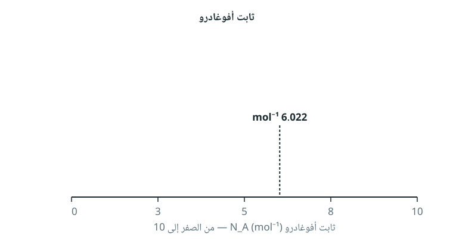

ثابت أفوغادرو
Avogadro constant
ثابت أفوغادرو N_A هو عدد الكيانات الأولية في المول الواحد، وقيمته 6.022 140 76×10²³ mol⁻¹. منذ 2019 صار قيمة تامة بالتعريف، فانتقل من قياس له عدم يقين إلى تعريف يبني المول.
ثابت أفوغادرو، ورمزه N_A، هو عدد الكيانات الأولية في مول واحد من المادة، ووحدته mol⁻¹. يثبّت كتيّب النظام الدولي قيمته العددية عند 6.022 140 76×10²³ حين يُعبَّر عنها بوحدة mol⁻¹، ويقرّر أن هذه القيمة تامة بلا عدم يقين. وهذا الثبات هو ما يجعل المول معرَّفاً بالعدد لا بالكتلة. وقبل مراجعة 2018 كان ثابت أفوغادرو مقيساً بعدم يقين نسبي في حدود 10⁻⁸، وكان المول معرَّفاً بكتلة 0.012 كغ من الكربون-12؛ فلمّا صار الثابت تاماً انقلب الاتجاه وصارت كتلة الكربون-12 هي المقيسة. وثابت أفوغادرو ليس عدداً مجرَّداً بل عدد بوحدة، لأنه يربط كمية مادة بعدد كيانات. مثال: في 12 غ من الكربون-12 عدد من الذرات يساوي 6.022 140 76×10²³ ذرة بالضبط بحسب التعريف.
كيف تعمل الظاهرة؟
ثابت أفوغادرو يعمل معرِّفاً لا مقيساً: النظام الدولي يثبّت قيمته العددية ثم يبني عليها تعريف المول، فيصير كل قياس لكمية مادة تحويلاً بين كتلة مقيسة وعدد كيانات محسوب. وعملياً يُستعمل في اتجاهين: من الكتلة إلى العدد بقسمة الكتلة على الكتلة المولية ثم الضرب في N_A، ومن العدد إلى الكتلة بالقسمة على N_A ثم الضرب في الكتلة المولية. وفي الكيمياء الكهربائية يربط N_A الشحنة الجزيئية بالشحنة المولية عبر F = N_A·e، فيصير قياس شحنة مقيسة بالكولوم قابلاً للتحويل إلى عدد إلكترونات.
العلاقة بالأرقام
N_A = 6.022 140 76×10²³ mol⁻¹ قيمة تامة. وN = n·N_A حيث N عدد الكيانات وn عدد المولات. وR = N_A·k = 8.314 462 618 J/(mol·K). وF = N_A·e = 6.022 140 76×10²³ × 1.602 176 634×10⁻¹⁹ = 96 485.332 12 C/mol. مثال: كتلة جزيء ماء واحد = 18.015×10⁻³ kg/mol ÷ 6.022 140 76×10²³ mol⁻¹ = 2.9915×10⁻²⁶ kg.
مفاهيم متقاربة
ثابت أفوغادرو كمية بوحدة mol⁻¹، وليس عدداً صرفاً؛ فالقول «6.022×10²³» بلا وحدة خطأ. وهو ليس ثابت بولتزمان ولا ثابت الغاز: الثلاثة مترابطة بـR = N_A·k لكنها ثلاثة ثوابت مختلفة الأبعاد. وقبل 2019 كان مقيساً بعدم يقين، وبعد 2019 صار تاماً؛ فالوصف الصحيح «قيمة تامة بالتعريف» لا «قيمة مقيسة بدقة عالية».
حدود التطبيق
لا يُستعمل الثابت لعدّ كيانات غير محددة الهوية، ولا لوصف خليط بلا صيغة. وفي المواد الصلبة غير الجزيئية يُطبَّق على الصيغة التجريبية لا على جزيئات منفصلة. ولا يصحّ استعماله لتحويل كتلة إلى عدد كيانات بلا معرفة الكتلة المولية للمادة بعينها. ودقته التامة لا تعني أن أي حساب عددي بها تام: الكتلة المولية نفسها مقيسة ولها عدم يقين.

| الكمية | القيمة | المصدر |
|---|---|---|
| ثابت أفوغادرو N_A | 6.022 140 76×10²³ mol⁻¹ | [1] |
| ثابت الغاز المولي R | 8.314 462 618 J/(mol·K) | [2] |
| ثابت بولتزمان k | 1.380 649×10⁻²³ J/K | [3] |
المصادر
- 1 The International System of Units (SI), 9th edition (2019) — BIPM — Bureau International des Poids et Mesures (2019). www.bipm.org/en/publications/si-brochure · اطُّلع عليه 2026-11-21
- 2 CODATA Value: molar gas constant — NIST — CODATA 2022 recommended values (2024). physics.nist.gov/cgi-bin/cuu/Value?r · اطُّلع عليه 2026-11-21
- 3 The International System of Units (SI), 9th edition (2019) — BIPM — Bureau International des Poids et Mesures (2019). www.bipm.org/en/publications/si-brochure · اطُّلع عليه 2026-11-21
استشهد بهذا المصطلح
الصيغتان مبنيتان من بيانات الصفحة نفسها: العنوان والتاريخ ورابط النسخة المنشورة.
ثابت أفوغادرو — Avogadro constant. (2026). ديوان المعرفة — انفراد. https://infiradev.com/diwan/terms/term-avogadro-constant.html
@misc{term-avogadro-constant2026,
title = {ثابت أفوغادرو},
titleaddon = {Avogadro constant},
howpublished = {{ديوان المعرفة — انفراد} — مرجع علمي عربي},
year = {2026},
url = {https://infiradev.com/diwan/terms/term-avogadro-constant.html},
urldate = {2026-11-26},
note = {مراجعة علمية: hermes (مراجعة معتمدة 2026-11-26)}
}
راجعه: hermes (مراجعة معتمدة 2026-11-26) · 2026-11-26 · آخر تحديث 2026-11-21